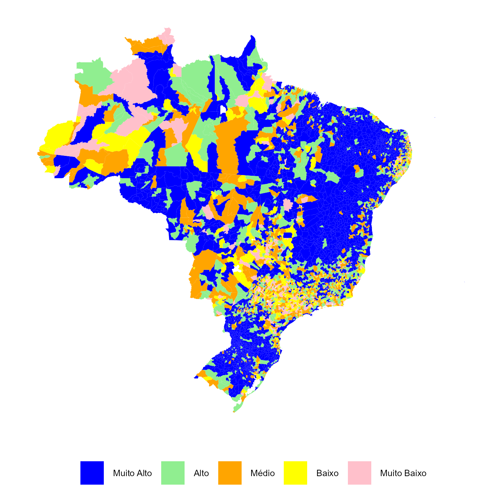
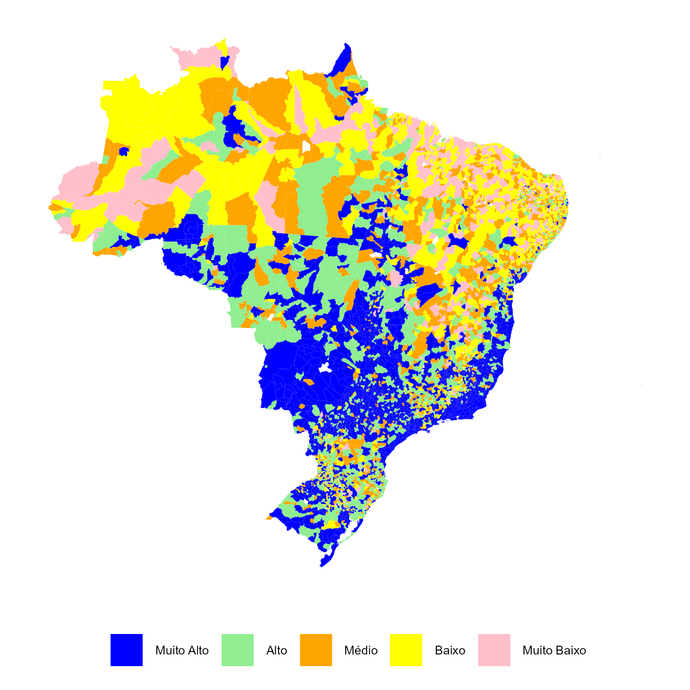

Capítulo 5 Área de Atuação das OSCs
Esta seção trata sobre as áreas de atuação das Organizações da Sociedade Civil - OSCs.
Tabela 5.1 - Número de OSCs, segundo a finalidade de atuação: Brasil
| Áreas de Atuação | Total de OCSs |
(%)
|
|
|---|---|---|---|
| Em relação ao total | Em relação ao grupo | ||
| Habitação | |||
| Habitação | 7 | 0.0 | 58.3 |
| Outros Habitação | 5 | 0.0 | 41.7 |
| Saúde | |||
| Hospitais | 3.856 | 0.3 | 14.8 |
| Outros serviços de saúde | 14.730 | 1.1 | 56.4 |
| Subárea Não Identificada | 17 | 0.0 | 0.1 |
| Subárea Não Identificada | 7.526 | 0.6 | 28.8 |
| Cultura e recreação | |||
| Cultura e arte | 26.388 | 2.0 | 17.4 |
| Esportes e recreação | 65.967 | 4.9 | 43.4 |
| Outros Cultura e recreação | 29 | 0.0 | 0.0 |
| Subárea Não Identificada | 59.673 | 4.5 | 39.2 |
| Educação e pesquisa | |||
| Educação infantil | 11.029 | 0.8 | 29.7 |
| Ensino fundamental | 4.736 | 0.4 | 12.8 |
| Ensino médio | 161 | 0.0 | 0.4 |
| Ensino superior | 1.670 | 0.1 | 4.5 |
| Estudos e pesquisas | 1.926 | 0.1 | 5.2 |
| Educação profissional | 983 | 0.1 | 2.6 |
| Outras formas de educação/ensino | 8.494 | 0.6 | 22.9 |
| Outros Educação e pesquisa | 12 | 0.0 | 0.0 |
| Atividades de apoio à educação | 3.389 | 0.3 | 9.1 |
| Subárea Não Identificada | 4.699 | 0.4 | 12.7 |
| Assistência social | |||
| Educação infantil | 1 | 0.0 | 0.0 |
| Assistência social | 45.528 | 3.4 | 67.7 |
| Outros Assistência social | 28 | 0.0 | 0.0 |
| Subárea Não Identificada | 21.649 | 1.6 | 32.2 |
| Religião | |||
| Religião | 282.467 | 21.2 | 100.0 |
| Outros Religião | 1 | 0.0 | 0.0 |
| Subárea Não Identificada | 1 | 0.0 | 0.0 |
| Associações patronais e profissionais | |||
| Associações empresariais e patronais | 10.179 | 0.8 | 21.9 |
| Associações profissionais | 16.814 | 1.3 | 36.2 |
| Associações de produtores rurais, pescadores e similares | 5.343 | 0.4 | 11.5 |
| Cooperativas sociais | 7.061 | 0.5 | 15.2 |
| Outras Associações patronais e profissionais | 7.062 | 0.5 | 15.2 |
| Subárea Não Identificada | 1 | 0.0 | 0.0 |
| Meio ambiente e proteção animal | |||
| Meio ambiente | 52 | 0.0 | 7.6 |
| Proteção animal | 23 | 0.0 | 3.4 |
| Outros Meio ambiente e proteção animal | 9 | 0.0 | 1.3 |
| Subárea Não Identificada | 599 | 0.0 | 87.7 |
| Desenvolvimento e defesa de direitos e interesses | |||
| Associações de moradores | 27 | 0.0 | 0.0 |
| Centros e associações comunitárias | 44 | 0.0 | 0.0 |
| Desenvolvimento rural | 32 | 0.0 | 0.0 |
| Emprego e treinamento | 57 | 0.0 | 0.0 |
| Defesa de direitos de grupos e minorias | 101 | 0.0 | 0.0 |
| Desenvolvimento e defesa de direitos | 313.106 | 23.4 | 53.7 |
| Associações de pais, professores, alunos e afins | 91 | 0.0 | 0.0 |
| Associações patronais e profissionais | 185 | 0.0 | 0.0 |
| Cultura e recreação | 90 | 0.0 | 0.0 |
| Defesa de direitos e interesses - múltiplas áreas | 186 | 0.0 | 0.0 |
| Meio ambiente e proteção animal | 44 | 0.0 | 0.0 |
| Outras formas de desenvolvimento e defesa de direitos e interesses | 112 | 0.0 | 0.0 |
| Desenvolvimento e defesa de direitos e interesses - Religião | 8 | 0.0 | 0.0 |
| Saúde, assistência social e educação | 120 | 0.0 | 0.0 |
| Subárea Não Identificada | 269.170 | 20.2 | 46.1 |
| Área Não Identificada | |||
| Subárea Não Identificada | 20.838 | 1.6 | 100.0 |
| Outras atividades associativas | |||
| Outras organizações da sociedade civil | 119.069 | 8.9 | 100.0 |
| Nota: Dados atualizados até fevereiro 2025. Fonte: Mapa das Organizações da Sociedade Civil. Elaboração do IPEA. |
|||
Figura 5.1 - Densidade de OSCs de desenvolvimento e defesa de direitos e interesses por mil habitantes, por município

Figura 5.2 - Densidade de OSCs de Religiosas por mil habitantes, por município
